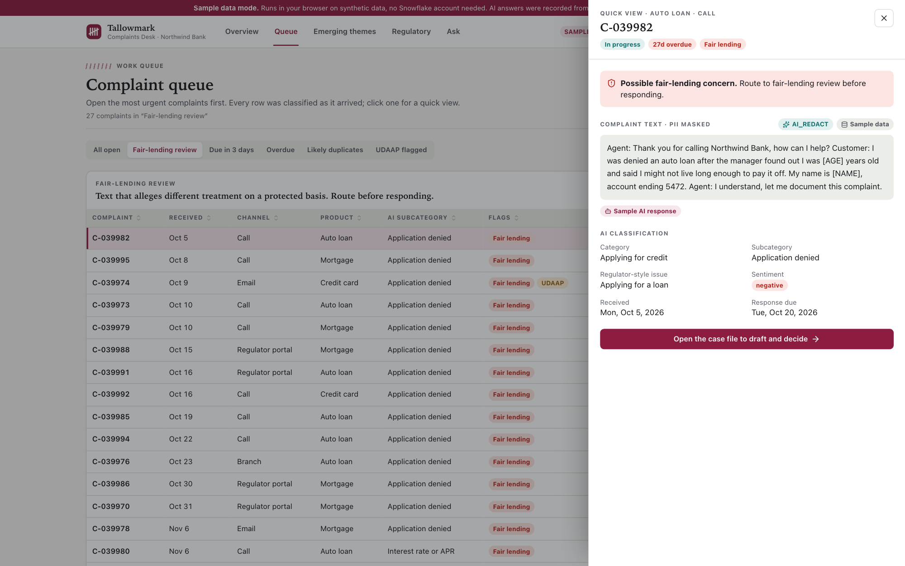
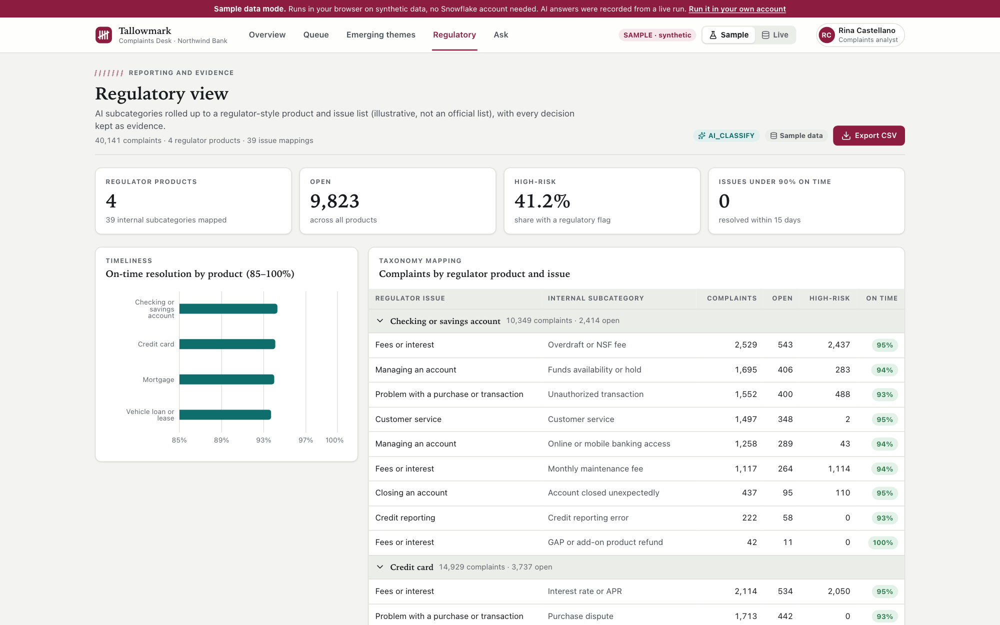
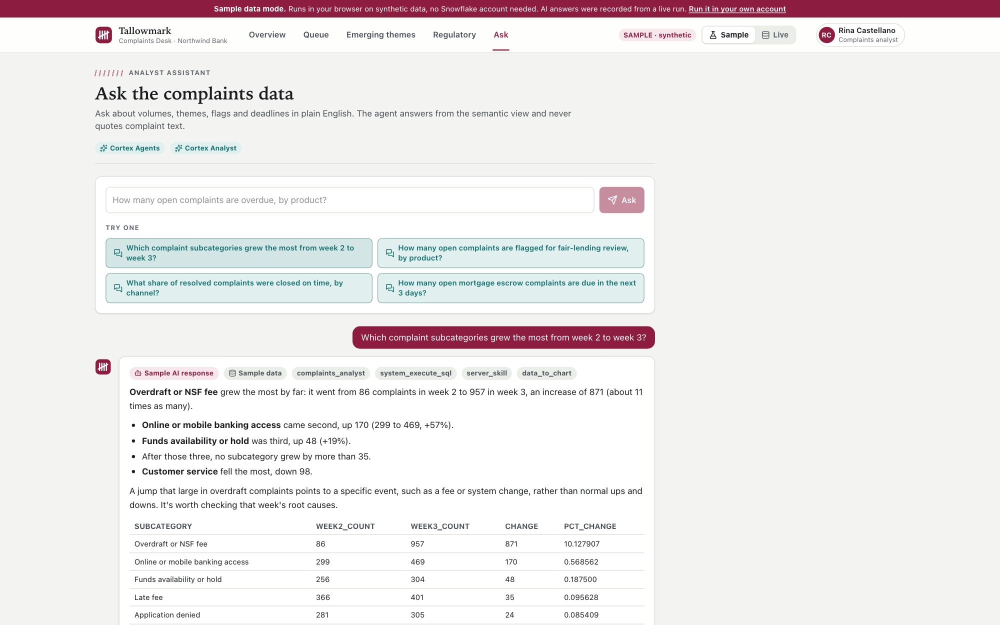

Classify every complaint and see conduct risk while it's still emerging
Complaints arrive as call notes, emails, branch notes, social posts, and regulator portal submissions. Teams tag them by hand, find spikes weeks late, and miss the few that need fair-lending review or are about to breach a response deadline. This example classifies every complaint as it lands with Snowflake Cortex AI functions in a Dynamic Table, flags UDAAP (unfair, deceptive, or abusive acts or practices), fair-lending, and servicing risk, masks PII, surfaces fast-growing themes with an AI summary of the root cause, finds repeat complaints across channels, and logs every decision as evidence.

Synthetic data, illustrative logic. Northwind Bank and every person in it are fictional. The taxonomy, regulator-style mapping, flags, and response window are illustrative, not an official regulator list. This is not legal, regulatory, or compliance advice, and AI output needs a person's review.
Who it's for
Complaints analysts
A queue with saved views for fair-lending review, deadlines, and duplicates; masked text, AI category and flags, and a response draft to edit.
Complaints managers
Volume by product and channel, the high-risk share, on-time resolution, aging, and themes that are growing fastest.
Compliance and product owners
A regulator-style roll-up with export, root-cause issues for owners, and a log of every decision with the person who made it.
Walkthrough
Screens from the no-account example. Numbers are planted stories on this synthetic data set.






How it works
Each capability below ran in live mode on a Snowflake account in November 2026.
| Step | Snowflake capability | What it does here |
|---|---|---|
| Continuous classification | Dynamic Tables with AI_CLASSIFY | COMPLAINT_AI refreshes incrementally, so each new complaint gets a subcategory from a 20-label taxonomy and multi-label UDAAP, fair-lending, and servicing flags. |
| Sentiment | AI_SENTIMENT | Overall sentiment per complaint, in the same Dynamic Table. |
| Duplicates | AI_EMBED and VECTOR_COSINE_SIMILARITY | Embeddings per complaint; a second Dynamic Table pairs complaints from the same customer and subcategory within 14 days. |
| PII masking | AI_REDACT | Replaces names, phone numbers, emails, and ages with placeholders before an analyst reads the text or a quote is shown. |
| Theme root cause | AI_AGG | Summarizes every complaint in a theme's peak week into the common cause. |
| Response drafts | AI_COMPLETE | Drafts a first response from the masked text, category, and due date for a person to edit. |
| Questions | Cortex Agents and Cortex Analyst | An agent answers questions with SQL generated over a semantic view of the classified complaints. |
Get started
No account
Open the hosted example, or run it locally with Node.js 20.19 or later:
git clone https://github.com/sfc-gh-ooral/sfguide-complaints-intelligence.git
cd sfguide-complaints-intelligence
npm install
npm run devAI output in this mode was recorded from a live run and is labeled Sample AI response.
Your Snowflake account
- Run
sql/setup.sqlin a Snowsight worksheet. It creates a dedicated database, an XSMALL warehouse, and a least-privilege role, loads the synthetic data from the repository, and classifies every complaint. - Register a key pair for your user and copy
.env.exampleto.env.local. - Run
npm run devand switch to Live. Each screen shows the live role and measured latency. - When you're done, run
sql/cleanup.sql.
The README lists every object created, the expected cost, and the full steps.
Customize with Cortex Code
- "Replace the taxonomy with mine and re-classify; show the categories where AI and my analysts' tags disagree most."
- "Alert me when any theme grows more than 50% week over week."
- "Map my complaint tables to SRC.COMPLAINTS and propose access so analysts only see masked text."
Limits and disclaimer
- The taxonomy, regulator-style mapping, flags, and 15-day response window are illustrative.
- Results such as "955 overdraft complaints in week 3" and "27 flagged for fair-lending review" are planted stories on this synthetic data set.
- AI classification and masking are best-effort suggestions; review them. Drafts are never sent.
- Latency depends on your account, region, model, and warehouse. The app shows measured times in live mode only.
This is an illustrative example provided as is. It is not an official Snowflake product, it isn't supported by Snowflake Support, and it contains no customer data. Not legal, regulatory, or compliance advice. Apache 2.0 license.